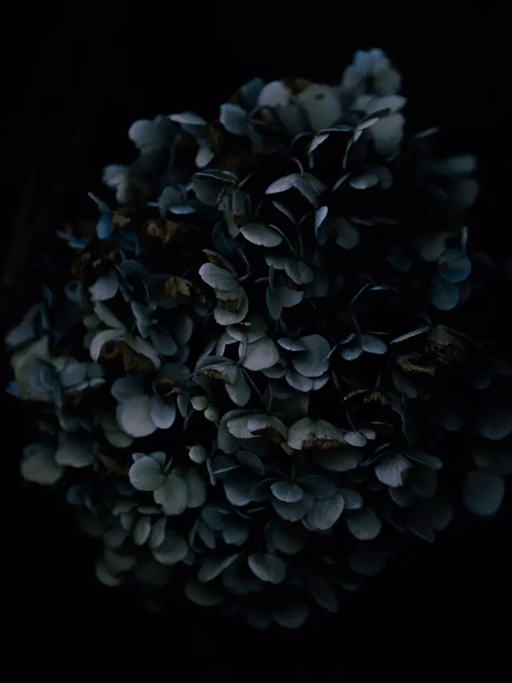

Fiordaliso, fioraio
Per chi sono?
La prima cosa che ti chiediamo al banco. Al resto pensiamo noi: mazzi legati a mano, da ritirare o da far arrivare.
Componi il bouquetErbario, foglio 1
Fiori recisi, di stagione
FiordalisoCentaurea cyanus L.
Un mazzo si fa in quattro gesti.
- 1
Il taglio in obliquo
Il gambo beve da una superficie più larga e non resta appoggiato sul fondo del vaso.
- 2
Via le foglie basse
Quelle che finiscono sott'acqua marciscono e sporcano l'acqua. Si tolgono tutte.
- 3
La legatura a spirale
I gambi si incrociano dalla stessa parte: il mazzo si apre e sta in piedi da solo.
- 4
Un giro di rafia
Stretto, ma senza tagliare i gambi. Poi il biglietto, scritto a mano.
Al banco adesso
Non tutto c'è tutto l'anno.
Lavoriamo con quello che la stagione porta. Prova a cambiarla: cambia il banco, e cambia anche il colore di questo erbario.
…alla prossima ricorrenza
In quei giorni il banco si svuota presto. Ordina il giorno prima, non la mattina stessa.
Per ogni occasione, il suo fiore.
- CompleannoUn mazzo allegro, con i fiori che ama chi lo riceve.da 24 €
- LaureaCorona d'alloro con il nastro rosso, pronta per la proclamazione.da 30 €
- Per farti perdonareFiori e biglietto. Le parole giuste le troviamo insieme.da 24 €
- NascitaUn mazzo leggero per la mamma, senza fiori dal profumo forte.da 24 €
- MatrimonioBouquet da sposa: si prova prima, con il vestito in fotografia.su richiesta
- Un salutoCuscino, corona o mazzo, con il nastro e la scritta che scegli.da 38 €
Prezzi di esempio.
Il banco
- Dove
- Via dell'Esempio 1, Sardegna
- Lunedì–sabato
- 8:30–13 e 16–19:30
- Domenica
- 8:30–12:30
- Mazzo
- da 24 €
- Consegna in città
- 5 €
- Biglietto
- sempre compreso
Indirizzo, orari e prezzi sono di esempio.
Qui vanno le recensioni dei tuoi clienti.
